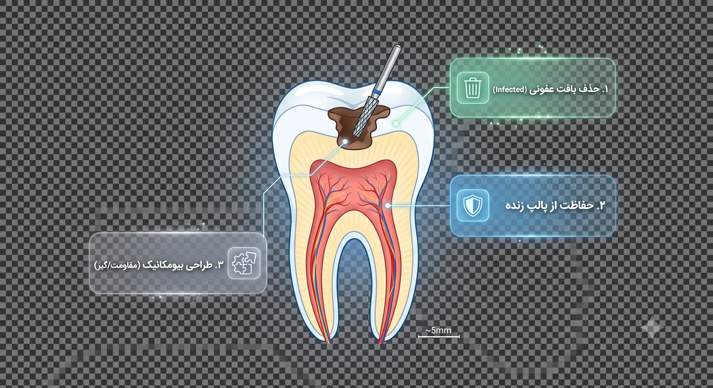
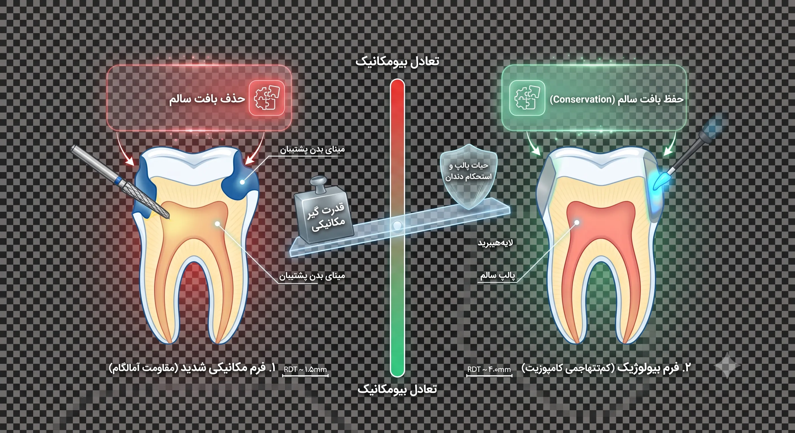
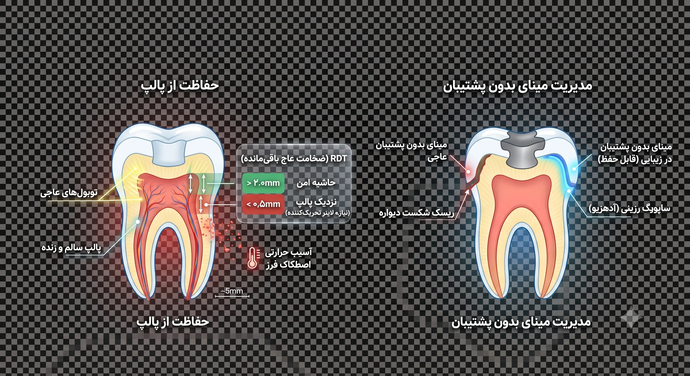

نسخه استخراجشده؛ ترجمه یا تأیید علمی انجام نشده است. وضعیت: incomplete
آمادهسازی دندان (Tooth Preparation): آمادهسازی دندان شامل تغییرات فیزیکی و مکانیکی در بافتهای سخت دندان (مینا و عاج) است که با اهداف زیر انجام میشود (تصویر ۲۳):
حذف بافت معیوب (Eliminate Defects): برداشتن کامل مینای ضعیف و عاج عفونی (Infected Dentin) که توسط باکتریها تخریب شدهاند.
حفاظت از ساختار زنده دندان (Protect Pulp): انجام دقیقِ تراش بدونِ آسیب حرارتی یا مکانیکی به پالپِ زنده (عصب و عروق).
طراحی بیومکانیک (Biomechanical Design): مهندسیِ دیوارهها و زوایای حفره بهگونهای که هم ماده ترمیمی در برابر نیروهای جویدن مقاوم باشد (فرم مقاومت) و هم از حفره خارج نشود (فرم گیر). 
اصلیترین چالش دندانپزشک، برقراریِ تعادل میان حفظِ حیاتِ بافتِ دندان و تامینِ گیرِ مکانیکیِ ترمیم است (تصویر ).
🔑 فلسفه تراش کمتهاجمی (Minimally Invasive): دندانپزشکی مدرن بر پایهیِ حفظِ حداکثریِ بافتِ سالمِ دندان (Conservation) استوار است. تراشِ بیش از حد، دندان را تضعیف کرده و احتمالِ شکستگیِ آن را جهش میدهد.
🧱 تفاوت در طراحی حفره (ماده-محور):
آمالگام (غیرآدهزیو): چون به دندان نمیچسبد، نیازمندِ فرمِ مکانیکیِ شدید است (دیوارههای همگرا به سمت اکلوزال و عمق کافی برای مقاومت). این رویکرد اغلب مستلزمِ حذفِ بخشی از بافتِ سالمِ دندان است. (سمت چپ تصویر ).
کامپوزیت (آدهزیو): چون با باندینگِ آدهزیو به دندان متصل میشود، نیازی به تراشهایِ گیردارِ مکانیکیِ مخرب ندارد. اولویت در اینجا حفظِ بافتِ سالم و بیول زدنِ میناست. (سمت راست تصویر ). 
حفاظت از حیات دندان و تضمینِ استحکامِ مارژینها، دو اصلِ کلیدیِ دیگر در آمادهسازی حفره هستند.
🛡️ حفاظت از پالپ (Pulp Protection):
آسیب حرارتی: تراش با سرعتِ بالا (توربین) بدونِ اسپریِ آبِ کافی، دمایِ پالپ را به شدت بالا برده و باعث التهاب یا نکروز آن میشود. (سمت چپ تصویر ).
ضخامت عاج باقیمانده (RDT): ضخامتِ عاجِ بینِ کفِ حفره و پالپ (RDT) بهترین عایق طبیعی پالپ است. RDT کمتر از ۰.۵ میلیمتر بسیار حساس است و نیازمندِ لاینرهایِ تحریککننده عاجِ ترمیمی است.
🧱 مدیریت مینای بدون پشتیبان (Unsupported Enamel):
مینا بافت بسیار سختی است اما اگر عاجِ زیرینِ آن (که بالشتک منعطف آن است) به دلیل پوسیدگی خالی شود، مینا "بدون پشتیبان عاجی" شده و تحت نیروهای جویدن فرومیریزد. (سمت راست تصویر ).
در آمالگام: مینای بدون پشتیبان باید کاملاً برداشته شود، وگرنه مارژینها خرد شده و ترمیم شکست میخورد.
در آدهزیو: گاهی میتوان مینای زیبایی بدون پشتیبان (مثل دیواره فسیال) را با نفوذ و ساپورتِ رزینِ آدهزیو حفظ کرد (سمت راست تصویر ).
